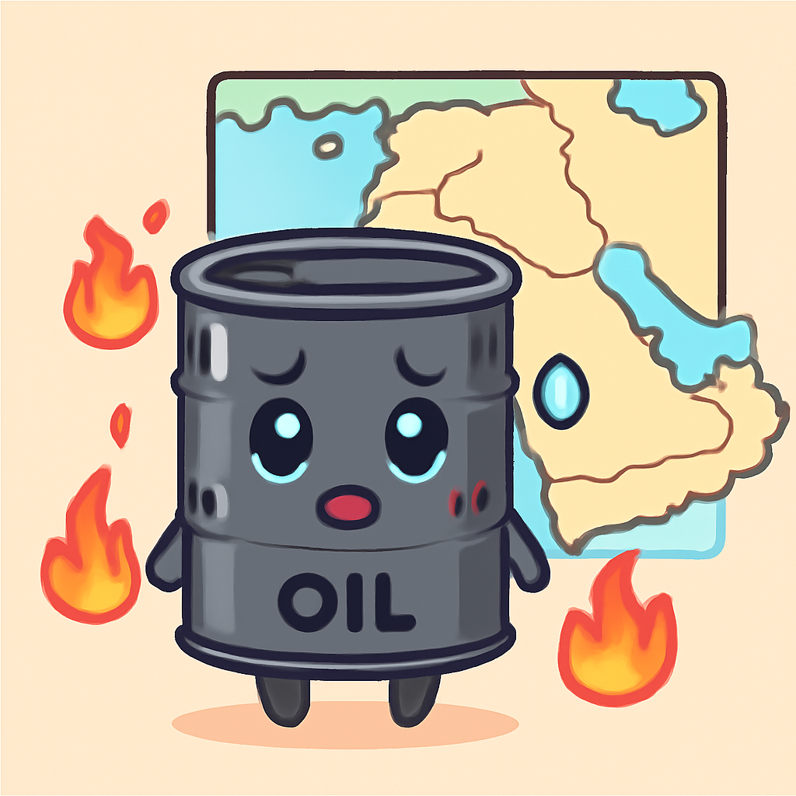
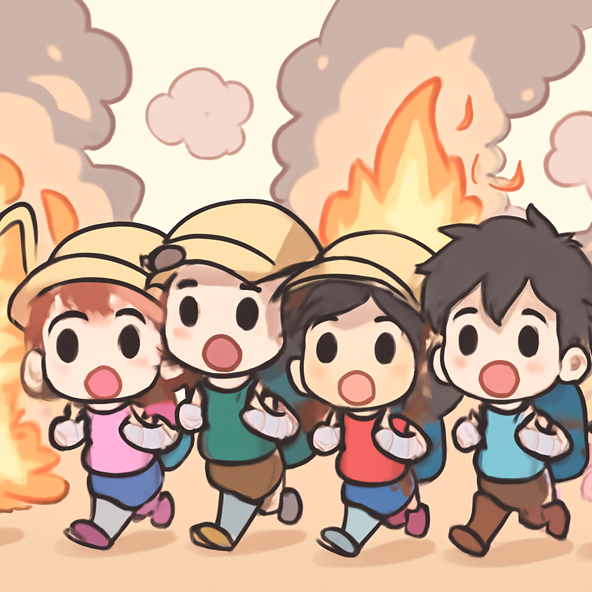
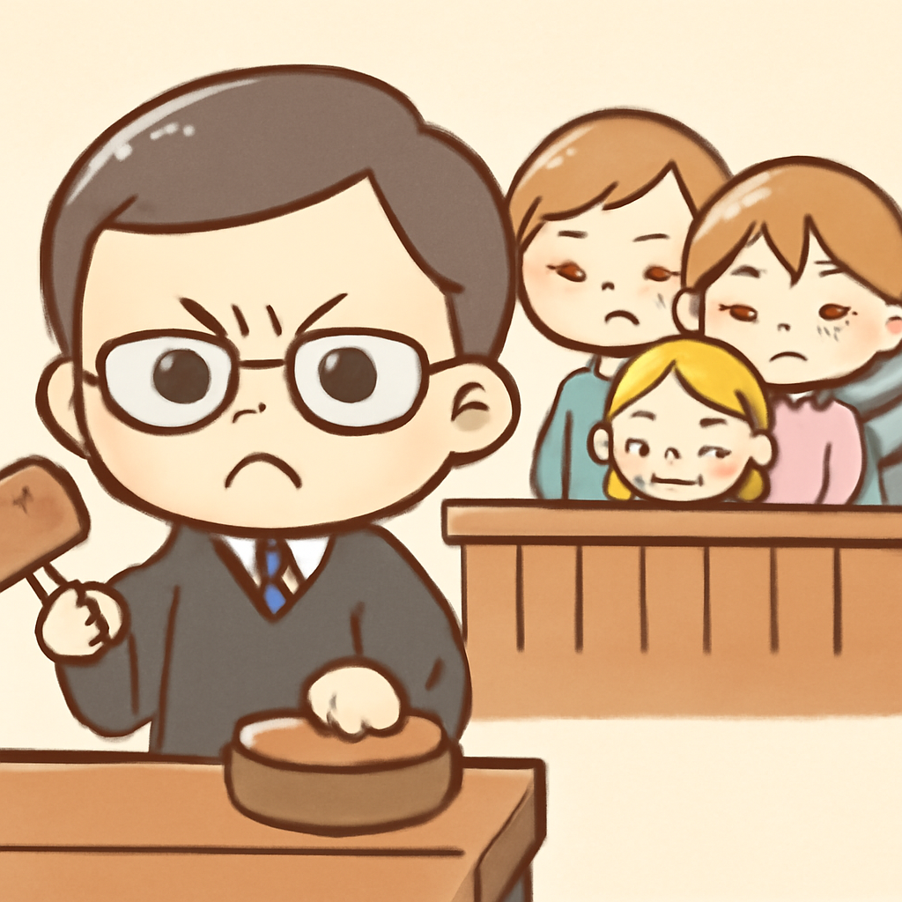
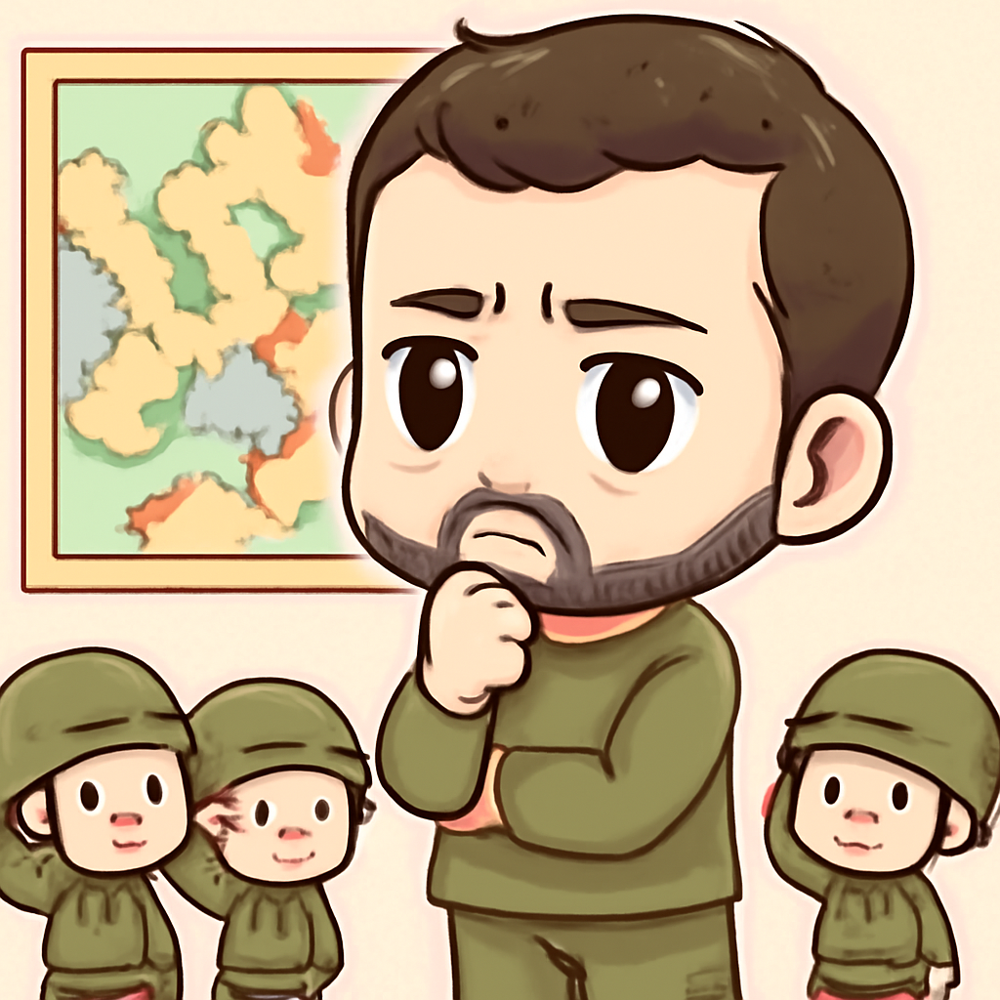

其一 · 以色列 · 中東局勢推動油價突破100美元
以色列與哈馬斯的衝突使油價飆升至每桶100美元

在以色列和哈馬斯的衝突持續升級之際，布倫特原油價格周四上漲超過6%，首次突破每桶100美元。這波漲價不僅影響全球市場，也讓各國開始重新檢視能源政策。看來油價又要成為話題中心了！
🔗 原始新聞 ↗
2026-07-24 · 以古觀今，以笑抗愁
以色列與哈馬斯的衝突使油價飆升至每桶100美元

在以色列和哈馬斯的衝突持續升級之際，布倫特原油價格周四上漲超過6%，首次突破每桶100美元。這波漲價不僅影響全球市場，也讓各國開始重新檢視能源政策。看來油價又要成為話題中心了！
🔗 原始新聞 ↗
法國南部的野火造成2萬人撤離，主要是遊客

法國南部的阿卡雄灣地區近日發生野火，導致約2萬人從露營地撤離。這場火災的蔓延速度讓人驚訝，當地居民和旅客的安全成為首要任務。希望這些遊客能在安全的地方享受好天氣，而不是躲避火災！
🔗 原始新聞 ↗
印度活動家結束26天的絕食以避免暴力升級
印度活動家索南·旺喀克在持續26天的絕食後終於結束，目的是避免可能的暴力事件，並持續為教育改革發聲。他的行動引起廣泛關注，顯示年輕一代對教育問題的堅持。希望他能好好吃一頓，補充能量！
🔗 原始新聞 ↗
尼日利亞前州長因謀殺孕學生被定罪

尼日利亞前州長奧科斯·奧巴多因謀殺與他有染的孕學生沙倫·奧蒂諾被判有罪。這起案件引發了社會的強烈反響，民眾對司法公正的期盼愈加迫切。希望法律能夠給予受害者的家人一絲安慰。
🔗 原始新聞 ↗
烏克蘭總統Zelensky在軍事領導上作出重大變革

烏克蘭總統澤倫斯基最近的決策引發爭議，他拒絕了前國防部長的職位，這使得兩人之間的角力更加緊張。這一策略是否能鞏固他的地位，還有待觀察。真希望他能找到一個能讓所有人團結的方案！
🔗 原始新聞 ↗